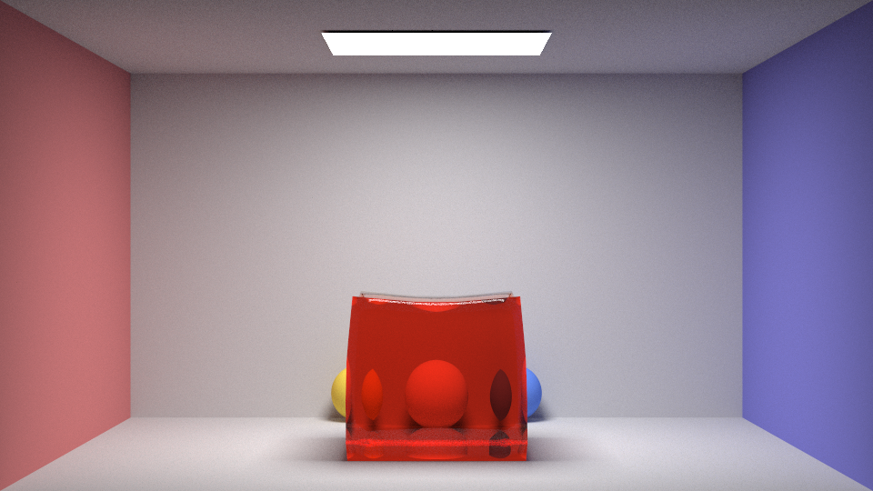
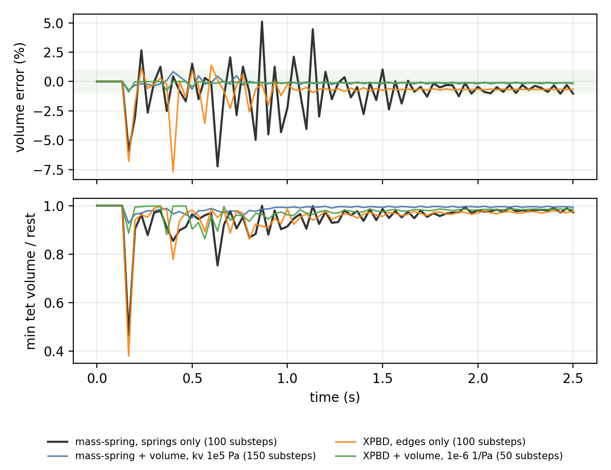

CS 184/284 · Milestone · November 19, 2026
Simulating and Path-Tracing
Translucent Jello
Eric Wu · Wenxuan Yuan · Arthur Yu · Alex Dils
Two volumetric solvers, one rendering pipeline.
Both drop and shaking-plate scenes run end to end.
- Mass-spring: edge springs, damping and a per-tet volume penalty.
- XPBD: compliant distance and volume constraints with substepping.
- Contact and appearance: friction, a moving plate, Fresnel refraction and Beer–Lambert absorption.

R3-06 · Deformed geometry changes refraction and optical path length
Initial results · Volume preservation and motion
Volume terms bring drop-test error below 1%

With volume: MS kᵥ = 10⁵ Pa, 150 substeps; XPBD αᵥ = 10⁻⁶ Pa⁻¹, 50 substeps
I1-05 · Rendered drop, 4 s at 30 fps · 960 × 540 per view, 64 spp
Video: k = 150 N/m; MS kᵥ = 10⁶ Pa, 400 substeps; XPBD αᵥ = 10⁻⁶ Pa⁻¹, 100 substeps.
Peak |volume error| in the plotted tests:
Mass-spring: 7.24% → 0.84%
XPBD: 7.71% → 0.90%
In the rendered drop, XPBD uses 100 substeps and reaches 0.47% worst volume error. Matched stiffness gives visually similar squash and rebound.
Initial finding: both methods preserve volume with explicit volume terms. XPBD’s motion and accuracy still depend on substep count.
Milestone status · Limitations and next steps
End-to-end demos are ready for the checkpoint
I1-06 · 5 Hz, 10 mm plate motion starting at t = 1 s
Similar sway and rocking, with gradual drift from stick-slip contact
Completed: four path-traced sequences covering two solvers × two scenarios, each 4 s / 121 frames at 30 fps, 960 × 540, 64 spp.
Current limits: caustic paths are omitted, so transmitted-light shadows remain dark. Few XPBD substeps can add damping or cause inversion and spurious rocking.
Weeks 3–4: evaluate the material
- Calibrate against real jello. Match oscillation frequency and decay before stronger physical comparisons.
- Compare accuracy and cost. Sweep stiffness, time step and mesh resolution under matched material settings.
- Tune the final appearance. Compare absorption and IOR against photos. Add scattering only after baseline experiments.
For Sunday: use the rendered comparisons and volume curves in the report, 1-minute video and these 3 slides.